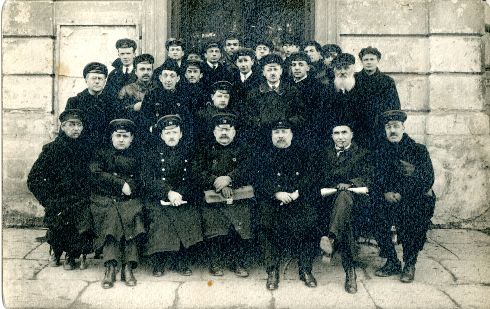

ЛЮДИ
Преподаватели и студенты 1920-1928Мандельштам Л.И. - номинант на Нобелевскую премию. Получил Государственную премию СССР им. В.И. Ленина, премию им. Д.И. Менделеева, награжден орденом Трудового Красного Знамени, премией им. И.В. Сталина первой степени и орденом Ленина.
Папалекси М.Д. получил премии им. Д.И. Менделеева и им. И.В. Сталина, был награжден орденом Ленина.
Тамм И.Е. - лауреат Нобелевской премии, 2 им И.В. Сталина, 4 им. В.И. Ленина. Награжден орденом Трудового Красного Знамени, многими медалями.
Аганин М.А. – член-корреспондент Академии наук
Цомакион Б.Ф.- профессор ОПИ
Слева направо второй ряд: Первый - Добровольский В.А., второй - Левинсон С.Д. - принимал участие в организации ОПИ как представитель от инициативной группы студентов, четвёртый - Приббе А.И., пятый - Богомаз К.А. Сидят слева направо: Первый - Смирнов И.В., второй - Рабинович Д.И., 3-ий - Николаи Б.Л., четвёртый - Пинегин В.М., шестой - Тамм И.Е., седьмой - Мандельштам Л.И. (ОПИ, 1922)

Сидят слева направо: 1) Берлин С.М. (Первый декан электротехнического факультета, созданного в 1922 году); 3) Николаи Б.Л., 4) Суслов Г.К. (Ректор ОПИ 1921-1928 гг ..), 5) Тамм И.Е., 7) Папалекси М.Д. (ОПИ, 1922)

Профессора, преподаватели и студенты ОПИ, 1924 г.
Выпускники ОПИ, 1924 г.
ОПИ, 1923 г. Сидит 2 ряд слева направо: 4-й Беленький С.Н. - директор ОИИ (ОПИ) в 1938 году
Первое военно-научное общество, созданное на рабочем факультете ОПИ, 1924 году (в центре И.Я. Передерий - директор ОВРИИ (ОПИ) 1931-1933 гг.)
Второй выпуск рабочего факультета с преподавателями, ОПИ, 1924 г.
Теплотехническая лаборатория ОПИ. Сидит в центре Пинегин В.М. (Первый декан энергетического факультета, созданного в ОПИ в 1925 году), у него справа Левинсон С.Д., Рабинович Д.И., 1926 г.
Преподаватели кафедры гидравлики ОПИ. Слева направо: Левинсон С.Д., Шестопал А.С., Пинегин В.М., Мирющенко А.А., 1927 г.
Преподаватели теплоэнергетического факультета ОПИ, 1927 г. В центре сидит Левинсон С.Д. - помощник ректора по АХЧ

Студенты на практике на учебно-показательном чугунно-литейном и механическом заводе (л. Мюльнера), 1920-е годы